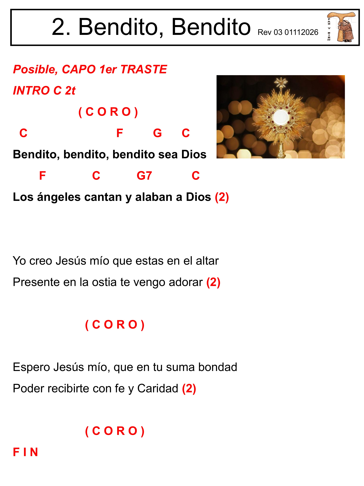

Modo sin internet
Preparando Signo Vino
Descargando todo el manual para que funcione 100% offline.
0 / 0 páginas
No entregues este iPad hasta ver “Offline listo”.
Ya puedes usar Signo Vino sin internet en este iPad.
Canción 0
🎉 ¡Buenas noticias! Ya no tienes que pasar páginas. Escribe el número y toca ↵ Ir — vas directo, sin scroll.
¿Cómo funciona?
-
←→
Canción anterior / siguiente
Toca las flechas grandes de arriba para cambiar de canción
-
👆
Pasar página
Desliza la pantalla hacia los lados para pasar página por página
-
◁
Abrir controles
Desliza desde el borde izquierdo o toca la franja oscura a la izquierda
-
← Cerrar
Cerrar controles
Toca "← Cerrar menú" arriba, o desliza el panel hacia la izquierda
-
123
Ir a una canción
Escribe el número con el teclado y toca ↵ Ir
-
🔍
Buscar
Escribe parte de la letra, el título o un tema
-
↩
← Volver
Regresa a la última canción que estabas viendo
Ajustes
Retroalimentación háptica al tocar botones
Modo oculto
Director offlineEscribe 2046 en el teclado y toca ↵ para entrar como director. Los demás dispositivos siguen automáticamente.